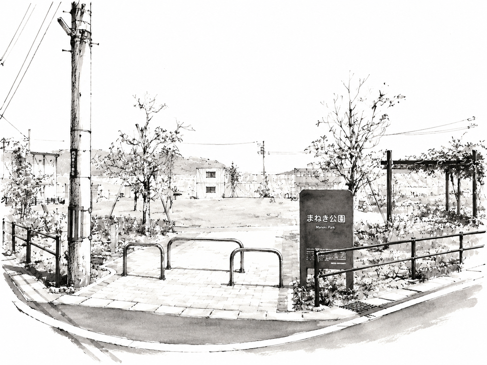
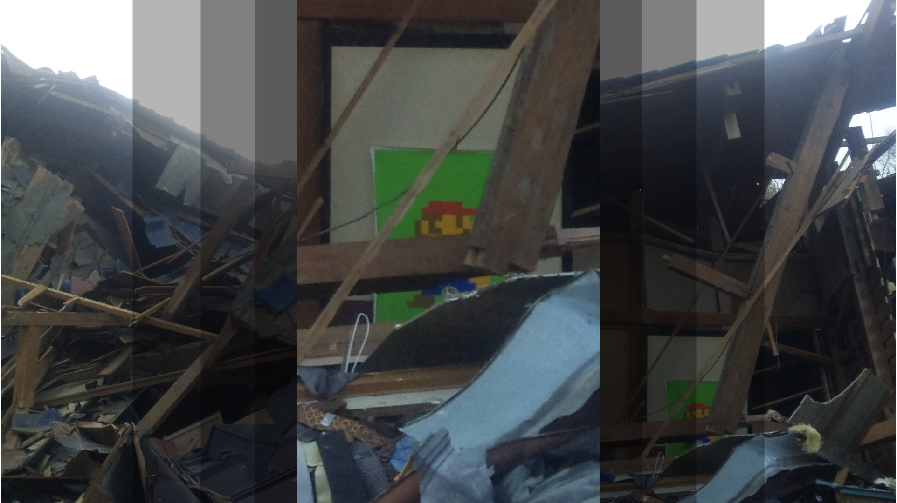

FEATURE 01「まねき公園」とは？
場所の由来と、震災後に公園となった経緯をたどります。
— 千年後に伝えるための、仕組みと場所づくり —

FEATURE 01場所の由来と、震災後に公園となった経緯をたどります。

PLAY在りし日の遊び場から、いまの伝承の形を考えます。
 FEATURE 02
FEATURE 02
被災の記憶、地域の語り、学びの場づくりをつなぎます。
 MEDIA
MEDIA
新聞、テレビ、ラジオ、ウェブ記事などの掲載情報を一覧で確認できます。
 MOVIE
MOVIE
まねき公園研究所の視点を、短い映像で見ます。
FEATURE 01
宮城県石巻市門脇町にある、2018年(平成30年)2月に開園した小さな(1,790㎡)都市公園です。2011年に発生した東日本大震災によって、甚大な被害を受けました。
石巻観光協会HPでは日和山公園について次のように紹介しています。
全国には約80カ所の日和山があり、江戸時代千石船の出航の日和を見る場所や航路目標の重要な山だったと考えられています。
石巻の日和山東南の中腹に「マネキ」（航路を指示する場所）という通称名があったことからも、江戸時代に栄えた船運と深い関わりがあると推測されます。
この日和山は高さ56mの北上川河口に位置する洪積段丘の孤立丘で、武神を祭る牡鹿十座の一つ鹿嶋御児神社（窪木家・旧県社）がその頂上に建立され、元来は5月15日が祭礼の日となっています。社伝によれば、宝亀11年（780）12月陸奥鎮守副将軍・百王俊哲の奏上が鎮座の起源と伝えられ、中世には奥州総奉行葛西氏の城「石巻城」があったと考えられています。
文禄2年（1593）政宗朝鮮出兵の際、水軍指揮の功績のあった阿部十郎兵衛土佐の奉納した軍配団扇が現在でも同社に残されています。元禄2年（1689）には松尾芭蕉と曽良が訪れ、石巻の繁栄ぶりに驚かされた様子が「奥の細道」からも読み取ることができます。
江戸時代から桜の名所として知られ、小野寺鳳谷（1810-1866）による「仙臺石巻湊眺望之全圖」にも石巻の繁栄ぶりが、パノラマ風に描かれています。大正初期に公園整備され、桜の他つつじで彩られる憩の場として今日に至っています。吉田松陰・志賀直哉、井伏鱒二、廣津和郎、宇野浩二等も眺望を楽しみ、芭蕉、保原花好、石川啄木、宮澤賢治、斎藤茂吉、種田山頭火、釈迢空、新田次郎、山形敞一等、多数の文学碑や、川村孫兵衛、芭蕉曽良像等の像が建てられています。
CONTINUE
RETRY

FEATURE 02
まねき公園を起点に、被災の記憶、地域の語り、学びの場づくりをつなぎます。

まねき公園と周辺の場所に残る記憶を、出来事や人のいとなみからたどります。

現地を歩くガイドや講演を通じて、震災の被害、復興、まちの変化を学びます。
新聞、テレビ、ラジオ、ウェブ記事などの掲載情報を一覧で確認できます。
一覧を見るMOVIE
EDITORIAL NOTE
「すごい」は、派手さではなく、
見たあとに残る密度のこと。